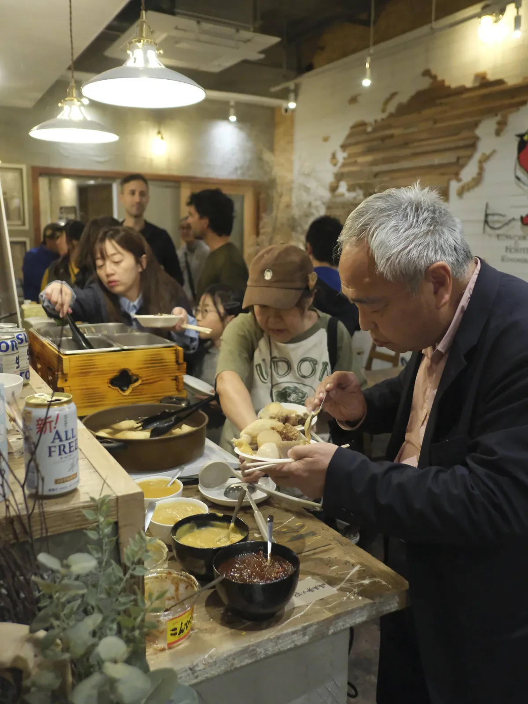
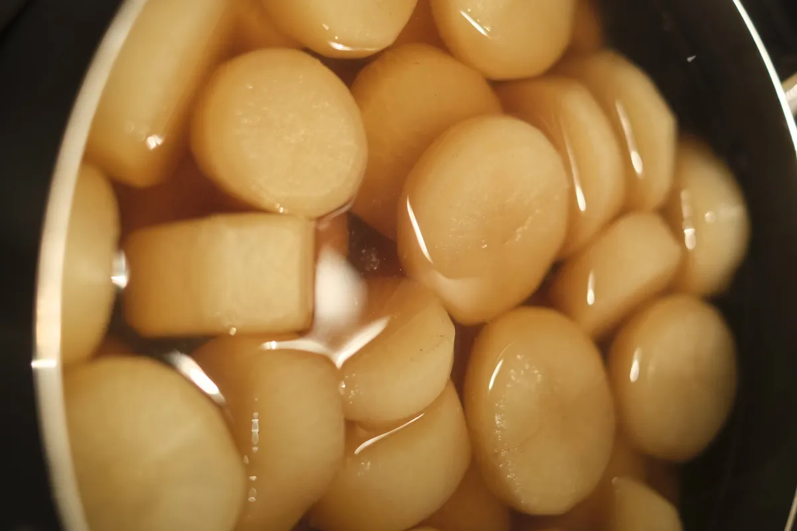
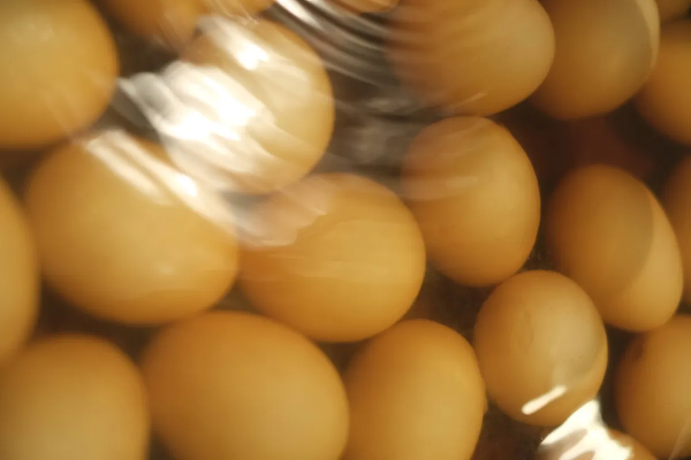
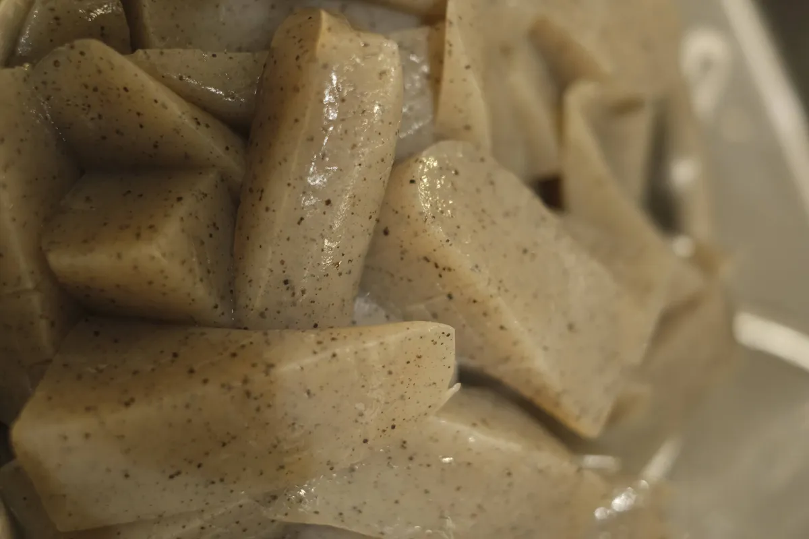
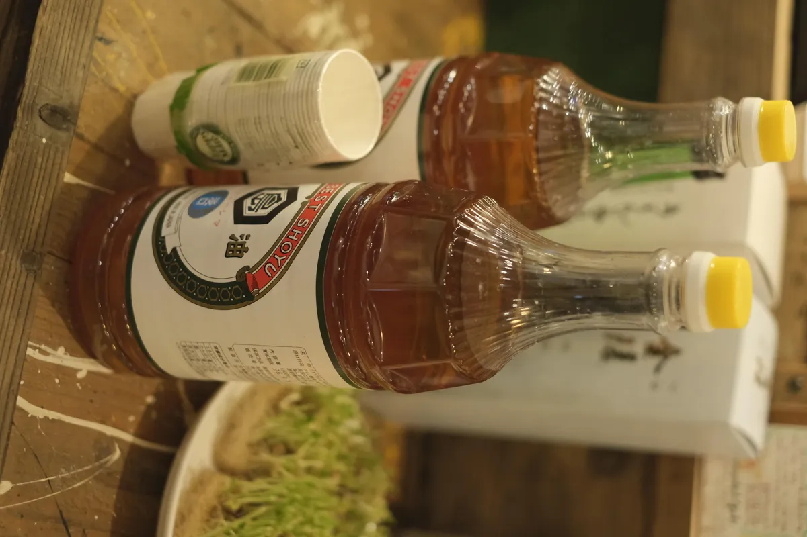
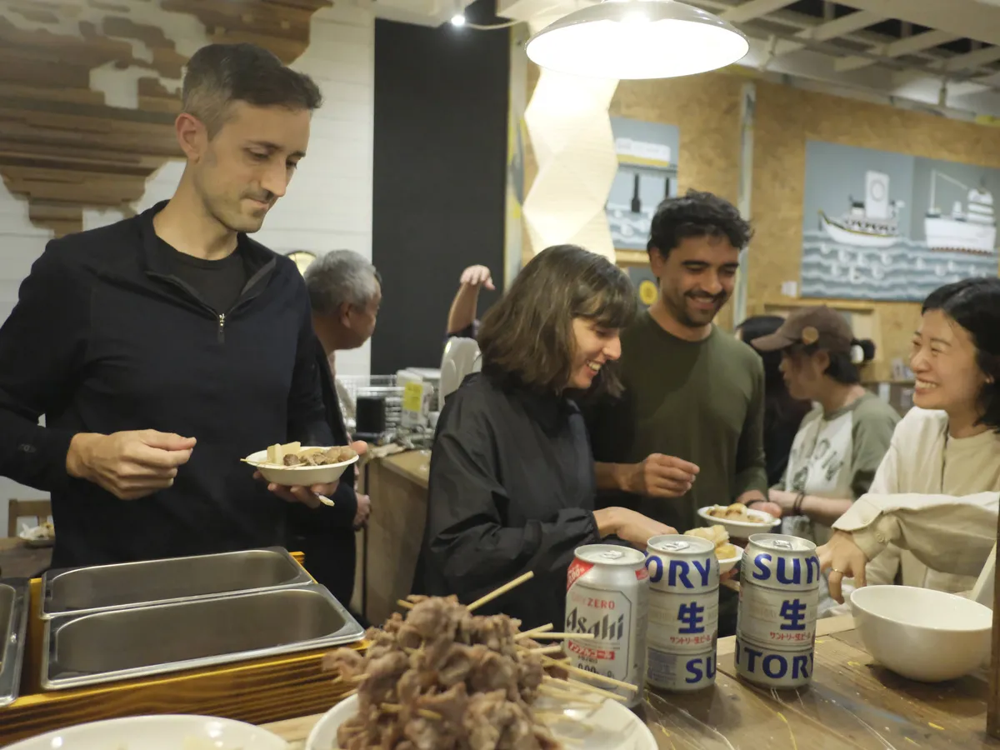

讃岐うどんの出汁で炊いたおでんと、地酒をお楽しみください。

好きな具材を自分で選んで、お皿に盛る。こんぴら味噌（白・赤）をつけて召し上がれ。
出汁だけで食べるもよし、味噌をたっぷりつけるもよし。お好みのスタイルで楽しんでください。
讃岐うどんの出汁でじっくり炊いた、こだわりの具材たち。
大根・卵・こんにゃく・練り物など、おすすめ5種をひと皿に。初めての方はまずこちらから。

讃岐うどんの出汁がしみ込んだ、とろとろの大根。看板メニューのひとつ。

出汁の色と旨味がしっかり染みた、おでんの定番。

味噌との相性抜群。ぷるっとした食感をお楽しみください。
地元・山地蒲鉾の練り物。おでんの主役級の存在感。
すべてのおでんに添えてお出しします。白味噌のやさしさと赤味噌のコク、お好みでどうぞ。
おでんに合う地酒を中心に揃えています。
琴平の地酒・金陵。おでんとの相性は折り紙付き。

日本酒をおでんの出汁で割る、讃岐おでんならではの一杯。身体に沁みる温かさ。

ビール各種、ソフトドリンクもご用意しています。
※ メニュー・価格は変更になる場合があります※ 仕入れ状況により具材が変わることがあります
毎月19日〜21日、コトリ コワーキング＆ホステル 琴平にて。予約不要です。